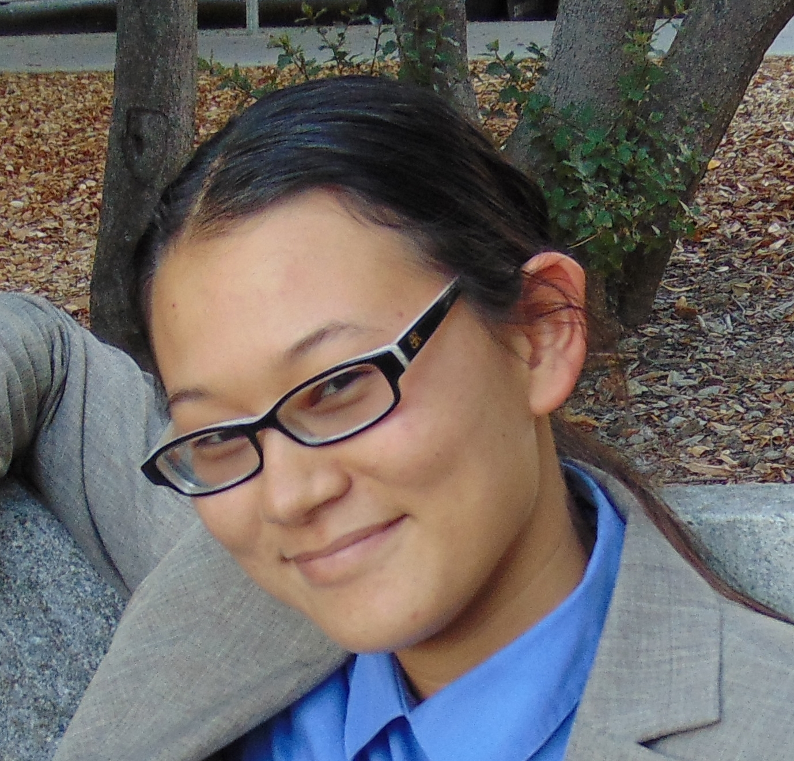

 |
|
I am a systems engineer working at Blue Origin on Blue Moon MK2 in support of NASA's Artemis Program. In May 2024 I graduated with a PhD from the Robust Robotics Group at MIT, advised by Nick Roy and supported by a NSF Graduate Fellowship. I hold a doctoral minor in Space Systems Engineering, and a master's degree from Bill Freeman's computer vision group.
I enjoy developing both crewed and autonomous systems for exploring space, research along the lines of human-inspired but task-oriented computer vision, and advocating for scientific and ethical federal technology policy. My current role centers around systems engineering, process definition, stakeholder interactions, impact analysis, and risk management.
In the past I made electronics for Venus probes and the SPT-3G telescope, and designed sensors that helped keep rocket engines from exploding. Before attending MIT, I studied physics and electrical engineering at UC Berkeley.
I enjoy teaching mathematics, physics, and electrical engineering in classrooms and 1-on-1, and nurturing the next generation of scientists and engineers through outreach and internships.
| 2025 | |
|
Anomalies by Synthesis: Anomaly Detection using Generative Diffusion Models for Off-Road Navigation
with Sunshine Jiang and Sid Ancha (primaries), Travis Manderson, Yilun Du, Philip R. Osteen, and Nick Roy. International Conference on Robotics and Automation (ICRA), 2025 [Oral] Website. Preprint. Code. Colab. 3-min Video |
| 2024 | |
|
PhD Thesis: Human-Inspired Methods for Extending Advances in Computer Vision to Data- and Compute-Constrained Environments
Massachusetts Institute of Technology |
|
|
FeatUp: A Model-Agnostic Framework for Features at Any Resolution
with Stephanie Fu and Mark Hamilton (primaries), Axel Feldmann, Zhoutong Zhang, and Bill Freeman. International Conference on Learning Representations (ICLR), 2024 [Poster] Website. Preprint. Code. Demo. Colab. News feature |
| 2023 |
|
Fusion for Reducing Domain Specificity in Computer Vision Models
with Nick Roy. March Meeting of the American Physical Society, 2023 [Oral] Abstract |
| 2022 | |
|
One Visualization is Worth 1000 Words: Toward Automated Data Recovery and Interpretation from Past 3D Visualizations
with Bill Freeman. March Meeting of the American Physical Society, 2022 [Oral] Abstract. Dataset |
|
The Importance of Experimental Controls: Evidence that Task-Dependent Invariances Define Functional Specialization in Cortical Hierarchy
March Meeting of the American Physical Society, 2022 [Poster] Abstract |
| 2021 | |
|
SM Thesis: Shape from Surface Contours via Artificial Neural Nets
Massachusetts Institute of Technology Thesis. Dataset |
|
|
Toward Automatic Interpretation of 3D Plots
with Bill Freeman. International Conference on Document Analysis and Recognition (ICDAR), 2021 [Poster] Preprint. Paper. Dataset |
| 2019 |
|
Graphene as a Diffusion Barrier in High-Temperature Electronics
with Ananth Yalamarthy, Peter Satterthwaite, Sam Vaziri, Savannah Benbrook, Eric Pop, and Debbie Senesky. March Meeting of the American Physical Society, 2019 [Oral] Abstract |
| 2018 |
|
Variability Study for Low-Voltage Micro-Electro-Mechanical Relay Operation
with Benjamin Osoba (primary), Bivas Saha, Sergio Almeida, Jatin Patil, Maurice Roots, Edgar Acosta, Junqiao Wu, and Tsu-Jae King Liu. IEEE Transactions on Electron Devices Paper |